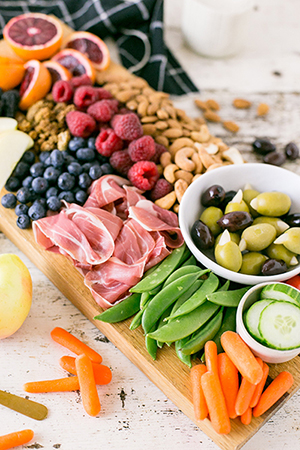

Cooking
As I mentioned, one of my hobbies is cooking. I really enjoy trying new recipes. I eat primarily paleo or autoimmune paleo because I have many food intolerances and chronic inflammation issues. These types of diets contain foods that are both nutrient dense and anti-inflammatory -- particularly because you are encouraged to eat a lot of vegetables.
I thought I'd share a few of the websites where I like to look for recipes. People think that eating this way can be really restrictive, but in reality, there are so many foods you can eat!
Here are a few of my favorite websites where you can find recipes that use nutrient-dense food:
At Unbound Wellness, Michelle shares how she uses these kinds of foods to help manage her Hashimoto's (autoimmune thyroid disease) and other gut issues.
At Grazed and Enthused, Alaena shares her story of using food in her fight against Hashimoto's disease and to heal infertility.
At Autoimmune Wellness, Mickey and Angie share many resources, recipes, and their stories of healing with five autoimmune diseases between the two of them.